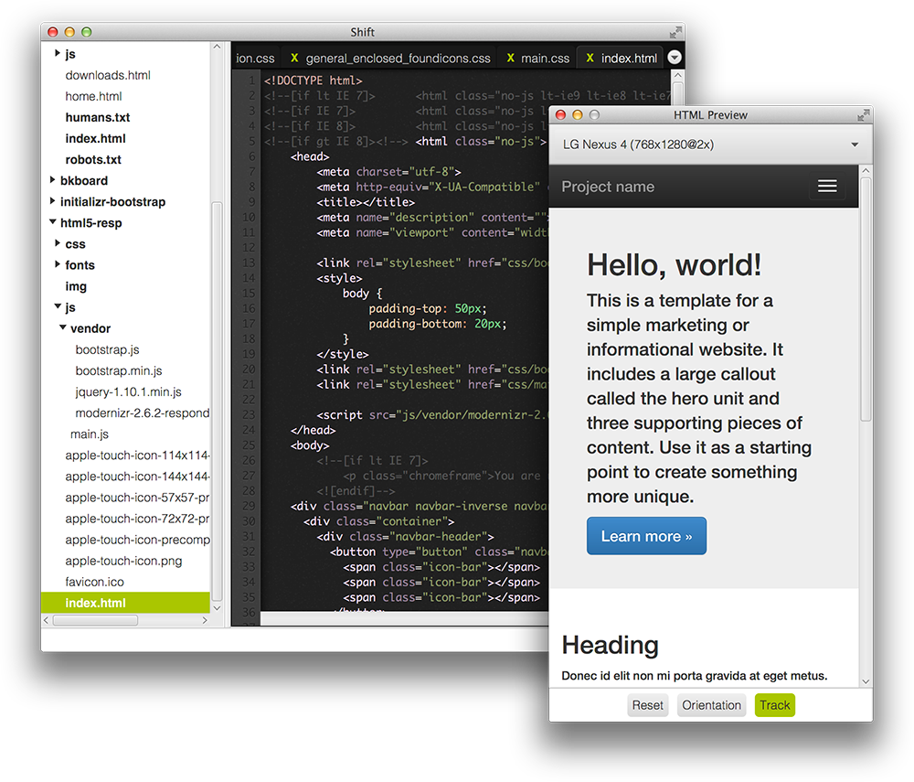
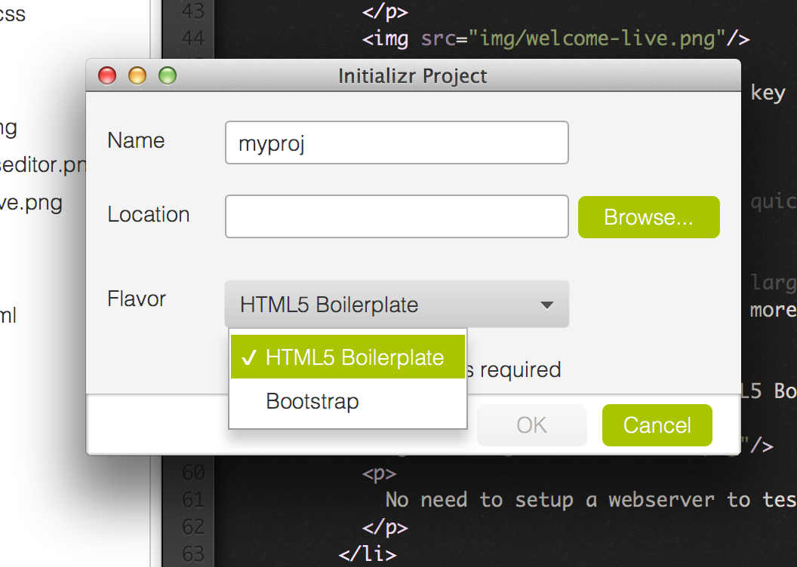
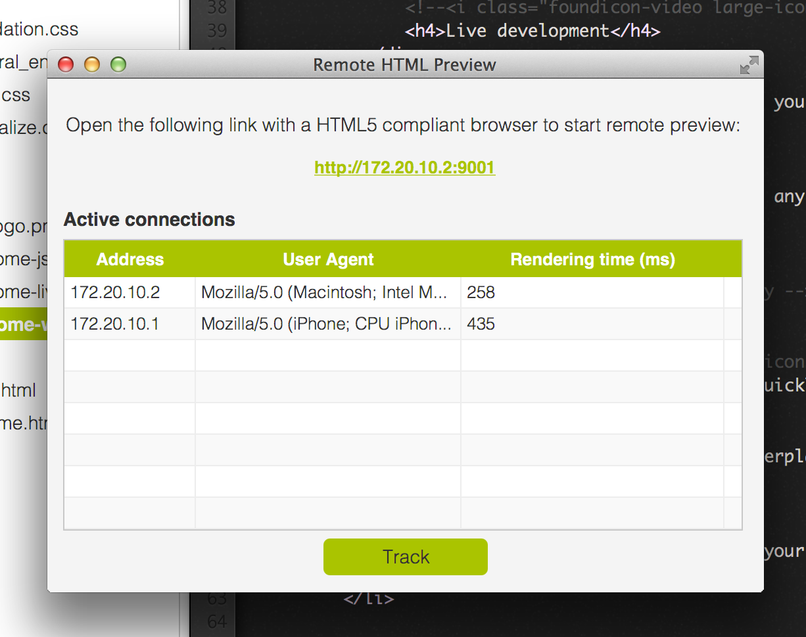
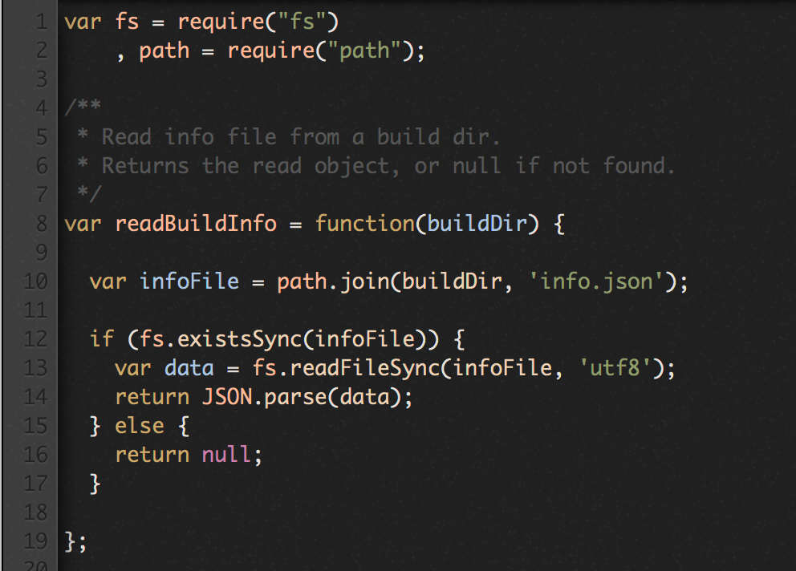

See your webpage change as you modify your code: in a preview window or remotely on any HTML5 capable browser.
No need to strike your refresh key at any change to see what's going on.
Generate your Bootstrap or HTML5 Boilerplate project in one click, thanks to project wizards.
No need to setup a webserver to test your pages, thanks to the remote preview.
Check rendering times on real devices while writing your pages and make sure your users will get the best experience.
Shift provides a built-in support for many file formats such as HTML, JS, CSS, JSON, XML ...
No need to install plugins or add-ons to start a project.